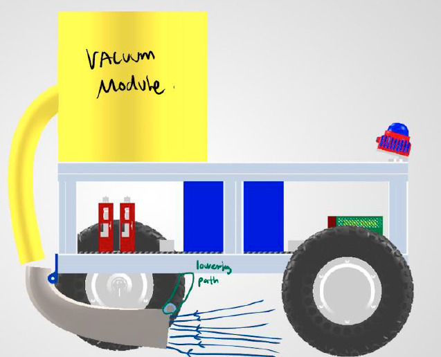
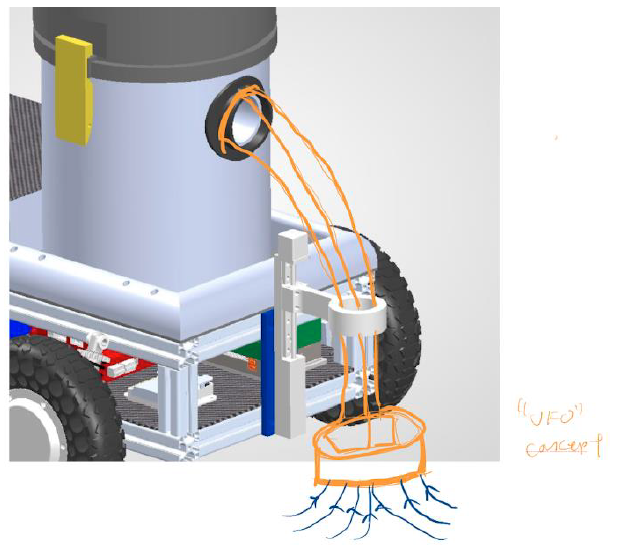
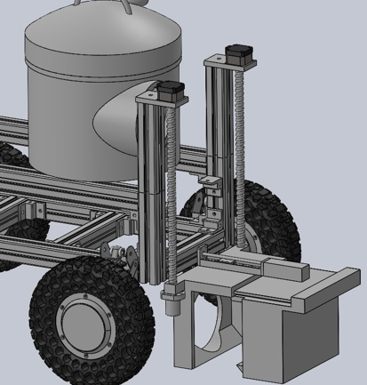
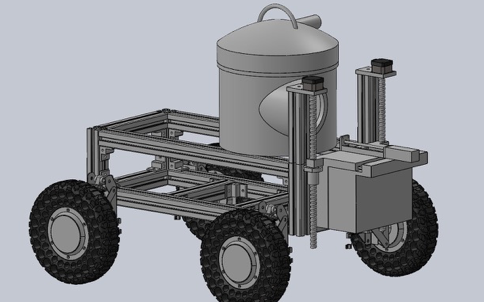
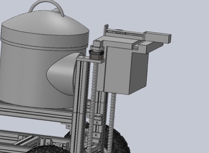
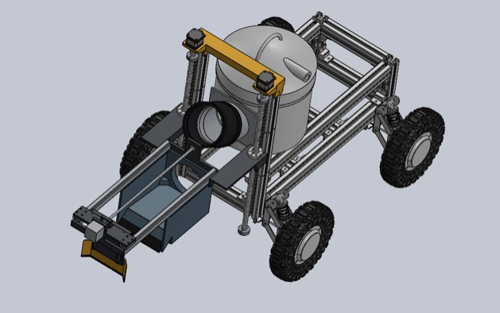

Literature Review: Why Runway FOD Retrieval Needs a New Approach
Foreign Object Debris (FOD) on movement surfaces is an operational and financial hazard to commercial and military aviation. Existing detection systems can localise millimetre-scale debris, but physical retrieval remains dependent on manual intervention and legacy sweeping equipment. Annual direct and indirect FOD damage is estimated at $12-$14 billion, with severe single-engine ingestion events exceeding $1 million in direct repairs.
Limitations of conventional clearing methods
| Method | Mechanical limitation | Operational constraint |
|---|---|---|
| Rotary and vacuum sweepers | High fuel or power draw; filters clog; leakage risk on tarmac. | Bulky footprint and slow active sweeping speed. |
| Friction or mat sweepers | Rubber squeegees wear rapidly and struggle with heavy or embedded items. | Requires towing and restricts manoeuvrability. |
| Magnetic bars | Cannot collect non-ferrous aluminium, titanium, rubber, plastic, or composite debris. | Cannot address biological hazards or non-magnetic hardware. |
| Independent blowers | Expel debris without containment. | Vortex, crosswinds, and jet blast can return debris to active pavement. |
Current detection deployments also leave an open-loop response: operators must notify ground teams and track vehicles across multi-kilometre paths. A coordinated multi-robot system can reduce this response bottleneck by allocating nearby tasks across localised debris clusters.
FOD Types, Design Selection, and Project Scope
The pickup system is scoped to collect inanimate solid debris, including both ferrous and non-ferrous objects. The target range is approximately 4 cm to 20 cm and 4 g to 300 g, from a small screw or fastener through to a bird carcass.
| FOD type | Gripper | Vacuum | Magnet | Mat / sweeper |
|---|---|---|---|---|
| Inanimate solid | Yes | Yes | No | Yes |
| Ferrous metal | Yes | Yes | Yes | Yes |
| Non-ferrous metal | Yes | Yes | No | Yes |
| Animate object | No | No | No | No |

FOD Remediation: Purpose and Requirements
- Collect FOD of varying sizes.
- Ensure 100% remediation of FOD.
- Nuts and bolts.
- Bird carcasses, even bones.
- Chips of the runway (stones).
- "We usually get about a handful."
- Special case: a big section of the runway.
- Able to pick up objects as small as nuts and bolts, up to bird-sized FOD (up to 5" diameter, 300 g). Anything bigger cannot be picked up and is sent to the command centre for intervention.
Different Approaches
| Clearing method | Able to pick up non-metallic objects? (e.g. stones, leaves) | Able to pick up metallic objects? (e.g. nuts, bolts) | Able to pick up animate objects? (e.g. birds) | Remarks | Final decision |
|---|---|---|---|---|---|
| Vacuum | Yes | Yes | Yes | Vacuum must be strong enough. | Select |
| Robot gripper arm | Yes | Yes | Yes | Mechanically complex, difficult to aim, and will struggle with smaller pieces. | Reject for now; keep in case the vacuum doesn't work |
| Magnetic bar | No | Yes | No | Might be good for nuts and bolts, but definitely not for others. | Reject |
Pickup Velocity and Motor Sizing
Minimum pickup velocity
In equilibrium:
For pickup:
Flow rate:
What size motor do I need?
- Blower efficiency refers to the efficiency of the fan itself (typically 50%).
- Motor efficiency refers to the electrical-to-shaft efficiency (typically 80%).
Component Selection and Specification Calculation
| Parameter | Case A: Nut and bolts, 25 g | Case B: Bird carcass, 300 g | Units | Remarks |
|---|---|---|---|---|
| Mass | 0.0250 | 0.3000 | kg | |
| Dimensions | D = 12 mm, L = 15 mm | 150 mm × 80 mm × 60 mm | mm | |
| Projected area | 0.0001131 | 0.0090 | m² | |
| Minimum duct diameter | 0.0381 | 0.1270 | m | 1.5 inch tube for case A, 5 inch tube for case B |
| Required pickup velocity | 67.2129 | 26.1008 | m/s | Safety factor not accounted for |
| Duct area | 0.0011 | 0.0127 | m² | |
| Required flow rate Q | 0.0766 | 0.3306 | m³/s | |
| Required static pressure (gauge) | 5669.5089 | 1100.2810 | Pa | Safety factor not accounted for |
| Air power | 434.4481 | 363.7929 | W | |
| Estimated motor power | 1086.1202 | 909.4822 | W | Safety factor not accounted for |
Pressure losses
| Pressure loss | Case A: Nut and bolts, 25 g | Case B: Bird carcass, 300 g |
|---|---|---|
| Dynamic pressure | 2710.54 Pa | 408.75 Pa |
| Nozzle entry loss | 948.69 Pa | 143.06 Pa |
| Duct friction loss (L = 0.4 m, d = 1.5 inches) | 626.06 Pa | 84.97 Pa |
| Elbow bend (k = 0.4) | 1084.22 Pa | 163.50 Pa |
| Pressure drop due to filter | 300.00 Pa | 300.00 Pa |
| Total pressure loss | 5669.51 Pa | 1100.28 Pa |
Interactive pickup sizing calculator
Change the object and duct to see the required pickup velocity, pressure losses and motor power. Constants: \(\rho = 1.2\ \text{kg/m}^3\), \(K_{entry} = 0.35\), \(f = 0.022\), \(L = 0.4\ \text{m}\), \(K_{bend} = 0.4\), \(\Delta P_{Filter} = 300\ \text{Pa}\), \(\eta_{blower}\times\eta_{motor} = 0.5\times0.8\). Duct friction uses the selected duct diameter.
Safety factor not accounted for.
Design and Iteration


Initial Thoughts and Conclusions
- The top-down approach works better than the side approach.
- The off-the-shelf vacuum system's efficiency is very low (10% of rated gauge pressure).
Testing and Evaluation
Findings:
- Pickup speed was measured with an anemometer at 42.47 m/s for a 1.5 inch diameter intake.
- The vacuum was able to pick up many small-sized screws.
- It was unable to pick up larger-sized screws unless the "surge" effect was applied.
Future Work: Redesigning the Pickup Mechanism
10.1 Redesigning the pickup mechanism
The redesigned pickup mechanism works in three steps:

Image to be added
Image to be added
Image to be added10.2 Working out the maths
Inclined tube to the bin, with friction
The force of drag is:
Given that the object starts from rest:
In the \(y\) direction, the object comes into contact with the tube:
In the \(x\) direction, the object is accelerating:
As long as the acceleration in the \(x\) direction is greater than 0, the FOD will be sucked in:
The minimum pickup velocity is therefore:
The object will be sucked in if:
If we were to ignore friction
The object does not come into contact with the tube:
Minimum pickup velocity: old and new set-up
| Parameter | Case A: Screw M8, 25 g | Case B: Bird carcass, 300 g | Units | Remarks |
|---|---|---|---|---|
| Mass | 0.0250 | 0.3000 | kg | |
| Dimensions | D = 12 mm, L = 15 mm | 150 mm × 80 mm × 60 mm | mm | |
| Projected area | 0.0001131 | 0.0090 | m² | |
| Minimum duct diameter | 0.0381 | 0.1270 | m | 1.5 inch tube for case A, 5 inch tube for case B |
| Required pickup velocity (old set-up) | 67.2129 | 26.1008 | m/s | Safety factor not accounted for |
| \(W/(C_DA)\) | 2710.5 | 408.8 | N/m² | Assumptions: \(C_D = 0.8\), \(\mu_s = 0.5\) |
| Min. \(v_{air}\), \(\theta = 30°\) (new set-up) | 0 | 0 | m/s | \(\mu_s\cos\theta-\sin\theta<0\), so the object slides by gravity |
| Min. \(v_{air}\), \(\theta = 0°\) (new set-up) | 47.5266 | 18.4560 | m/s | |
| Limit, \(\theta = 0°\) | 5421.1 | 817.5 | N/m² | \(\rho v^2/2\mu_s\), with \(v\) = 67.2 / 26.1 m/s |
| Picked up? | Yes | Yes | Yes, \(W/(C_DA)\) < limit |
* Caveat: the new set-up has not been tested yet; we will develop and test it as soon as we can.
Interactive: tube angle and friction
Change the tube angle \(\theta\) and the friction coefficient \(\mu_s\) to see the minimum air speed needed to move the object into the bin, compared with the 42.47 m/s measured from the off-the-shelf vacuum. Uses \(\rho = 1.2\ \text{kg/m}^3\) and \(C_D = 0.8\).
Safety factor not accounted for. Above the critical angle \(\theta_c = \tan^{-1}\mu_s\), the object slides into the bin by gravity alone.
10.3 New design in CAD

Image to be added10.4 Animation: sweep box v2
One full pickup cycle: the box lowers to the asphalt while the scraper opens and the blade reaches out, the scraper sweeps the FOD up the ramp, the box lifts above the bin, and with the vacuum on the FOD slides down the 5" hose into the bin. Drag to orbit, scroll to zoom, tap a part for details, or scrub through the 8 phases.
Animated model generated with Claude. The sweep box, top bridge and bin elbow follow the SolidWorks model; the chassis, wheels and bin are simplified stand-ins.
10.5 Testing: critical function prototype
A cardboard bounding box connected to the vacuum hose was used as a critical function prototype to test the new set-up.
- Hilburn, B. G. and Pesmen, B. S., Foreign Object Debris Detection System Cost-Benefit Analysis, FAA Tech. Rep. DOT/FAA/TC-22/47, 2023.
- El-Sayed, A. F., Foreign Object Debris and Damage in Aviation, CRC Press, 2022.
- Jain, S., Prasad, M. S., and Gupta, R., “A Comparison of Manual and Automotive FOD Detection Systems at Airport Runways,” ICRITO, 2022.
- Vidal, Y. L. S. et al., “A Systematic Review of Methods for Cleaning FOD on Runways,” EMES, 2023.
- Yamamoto, H. et al., “Drone-enabled Foreign Object Debris Removal System in ad hoc Situations,” ACRP University Design Competition, 2016.
- Ozturk, S. and Kuzucuoglu, A. E., “A multi-robot coordination approach for autonomous runway FOD clearance,” Robotics and Autonomous Systems, 2016.